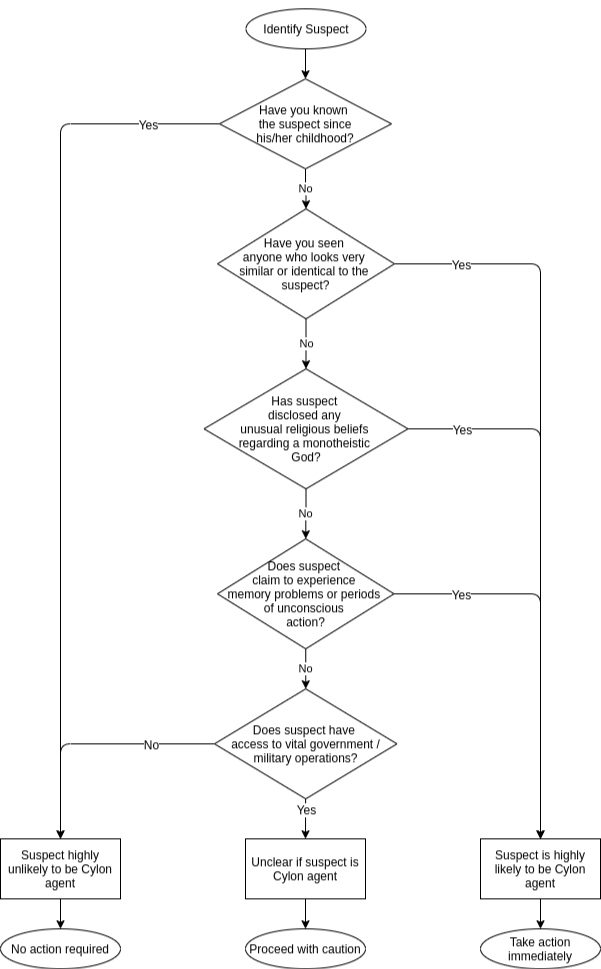

Testing Suspected Cylon Agents
Suspected Cylon spies must be reported as quickly as possible, as it can take virtually no time for a Cylon to inflict irreparable damage. However, excessive false accusations of suspected Cylon agents destroys the trust of the group and wastes the time and resources of leadership.
Therefore, we have developed this field guide to be used in the case that you suspect someone as a Cylon Agent:
Figure 6.2: Determining if a Suspect is a Cylon Agent
If immediate action is necessary, do whatever you need to secure the safety of yourself and other members of the CDF. If the result is unclear, report the situation to a higher-up immediately. In the interest of public safety, please keep this disclosure as private as possible. If no action is required, rest assured that the suspect is in fact a normal, gods-fearing human.
Refer to this document as needed. It is important that all members of the CDF do their due diligence to weed out Cylon Agents.
Figure 6.3: An artist's rendition of a Humanoid Cylon Agent